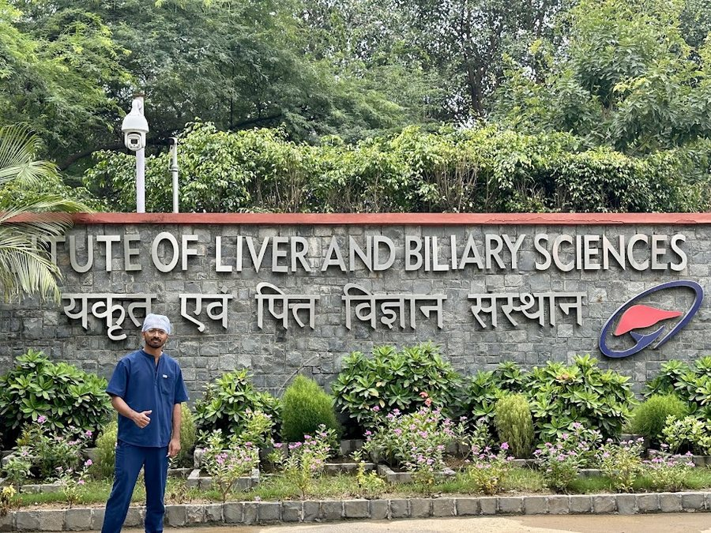
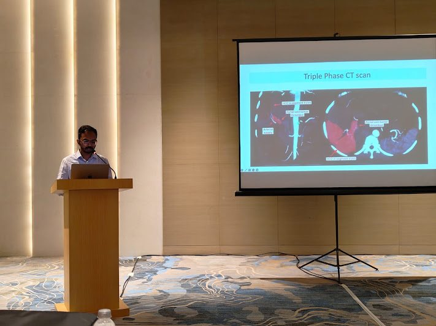
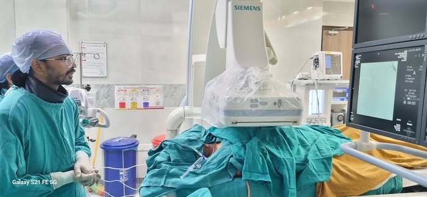
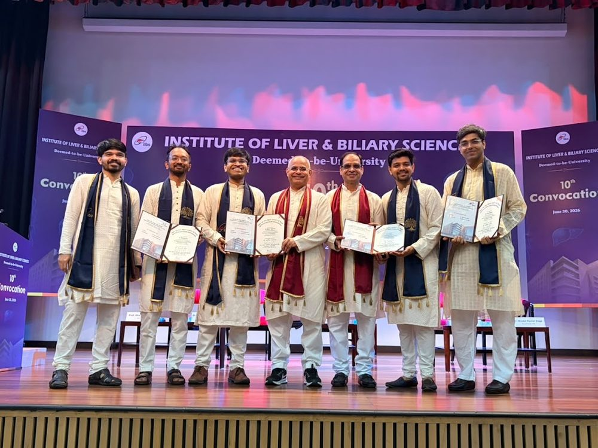
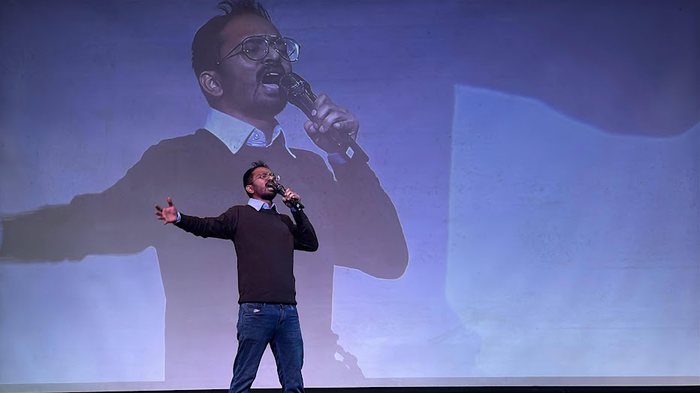

A decade in medicine, one milestone at a time.
Dr. Bhaskar Das did MBBS followed by MD Radiology at Gauhati Medical College & Hospital, then a senior residency at the State Cancer Institute with a focus on interventional radiology — and subsequently, a Fellowship in Vascular & Interventional Radiology at ILBS, New Delhi.
MBBS
Where it all started — five years of medical school, followed by a rotating internship on the same campus.
Ed-tech & Product
A detour before radiology — Dr. Bhaskar built learning tools and study planners for medical exam aspirants. The educator-and-builder instinct started here.
MD Radiology
Diagnostic and Interventional Radiology. Graduated with the Dr Mrinal Kumar Sharma Memorial Award for Best Radiology Graduate, 2022–23.
Senior Residency, Interventional Radiology
Dr. Bhaskar built his procedural foundation in oncological diagnostics as well as intervention.
FVIR — Fellowship in Vascular & Interventional Radiology
Super-specialised training across body IR — with a prime focus on liver and biliary interventions including PTBD, biliary stenting, TACE and Y90 TARE — at one of India's highest-volume liver centres.
A few frames from the last few years




